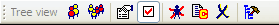

The most important functions from the menus are available in tool bars.
Each tool bar consists of a number of related buttons that each represent one menu item.
When you hover your mouse over a button, a small tool tip will show, with the button's function's name in it.
Whenever a button is being clicked, the button's function will be displayed in the status bar at the bottom of the program work space.
The following tool bars are available:
Tool bars 1-4 can be switched on and off from the menu.
Tool bars 5-7 are switched on and off automatically, depending on which work view is currently displayed.